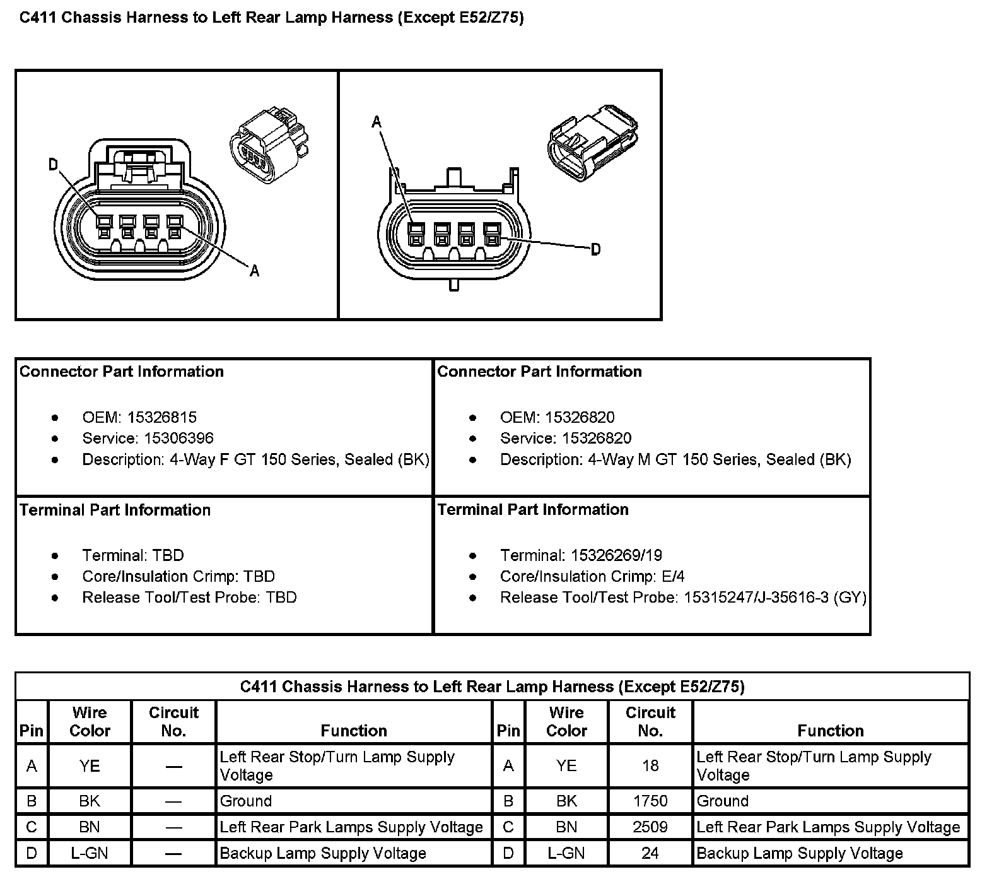
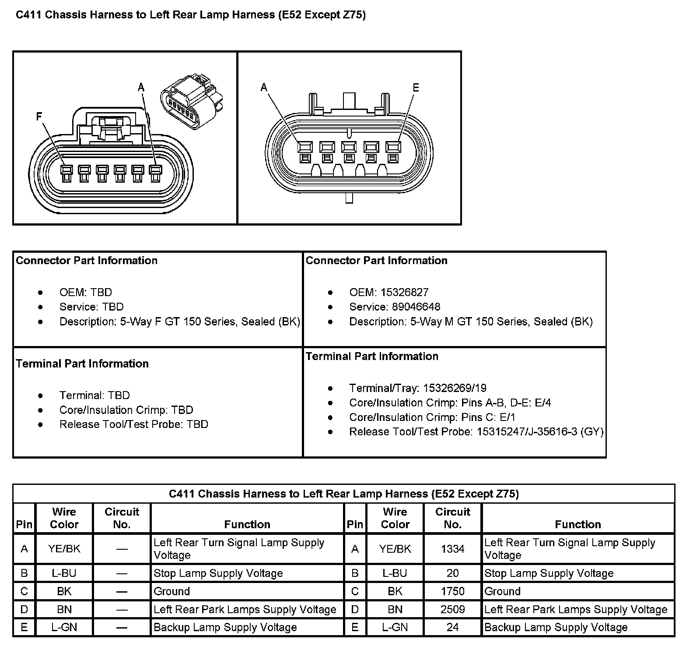
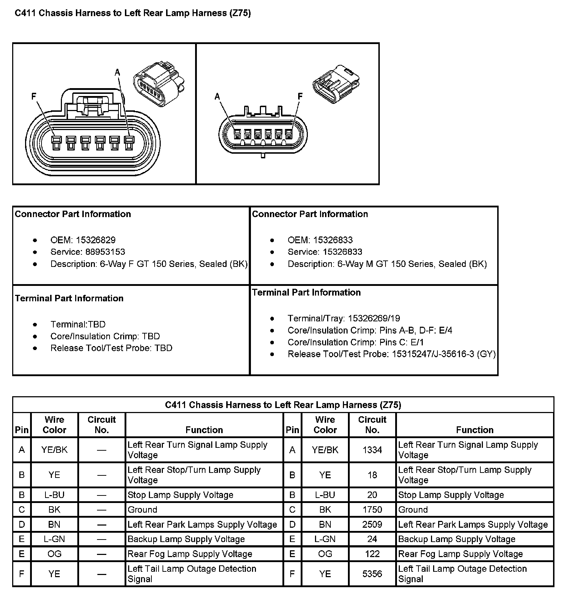

C411
C411 Chassis Harness To Left Rear Lamp Harness (Except RPO Code E52 And Z75):

C411 Chassis Harness To Left Rear Lamp Harness (With RPO Code E52 Except RPO Code Z75):

C411 Chassis Harness To Left Rear Lamp Harness (With RPO Code Z75):
